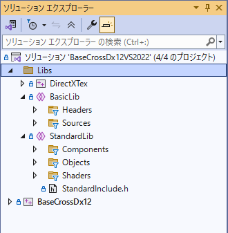

BaseCrossDx12ドキュメント
スタンダードサンプルとは
BaseCross64との関係
BaseCrossDx12における
スタンダードサンプルは、
前バージョン（BaseCross64）の仕様にできるだけ近づけたサンプルです。
すなわち、
Scene、Stage、GemaObjectを持ち
コンポーネントというオブジェクトで、必要な部品を追加できる仕様です。
もちろん、低いレイヤーにあるライブラリは
ベーシックサンプルにあるような
むき出しのDirectX12です。これをハイレベルで
BaseCross64の機能をできるだけ追加しています。
ベーシックサンプルとスタンダードサンプルの違い
ベーシックサンプルとスタンダードサンプルの違いはソリューションエクスプローラを見ると明らかです。
ベーシックサンプルのソリューションエクスプローラを見ると以下のようになってます。
それに対して
スタンダードサンプルのソリューションエクスプローラは以下のようになってます。

このように
Libsフォルダに
StandardLibというフォルダが追加されています。この中を開いてみるとわかりますが、
Components、Objects、Shadersというサブフォルダがあり、その中に
スタンダードサンプル用のライブラリが設置されています。これらが
BaseCross64に近づけるためのライブラリ群になっています。
オブジェクトの構成
ベーシックサンプルにある
Sceneと同じものです。アプリケーションに1つだけ存在し、
BaseSceneを継承して作られます。
BaseSceneはDx12オブジェクト（ディスクプリタジープなど）に直接アクセス可能です。
Scene内に1つだけ構築できます。通常は継承して
GameStageや
TitleStageなどを作り、
ResetActiveStage関数で表示するStageを決定します。
Stageは
GameObjectの配列を持ちます。各ステージへのオブジェクトの配置は、
GameObjectを継承して作られた
Playerや
Enemyなどのオブジェクトを
Stage::AddGameObject関数によって追加します。
各GameObjectは、そのプロパティのような機能として
Componentを持つことができます。
Componentは
Transform、Collision、Regitbodyのような
Update計コンポーネントと
DrawComponenntとして
Draw系コンポーネントがあります。
他機能につきましては、各サンプルを参照ください。